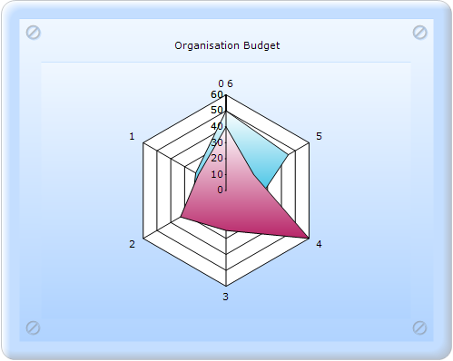
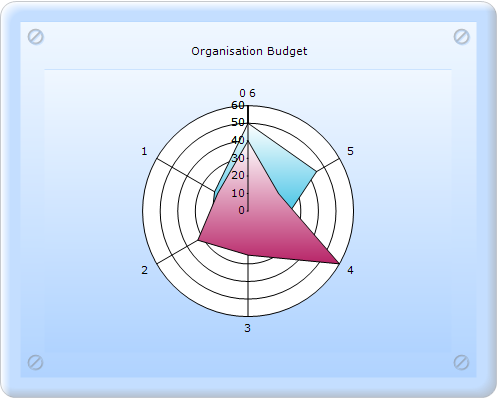

RadarStyle indicates the style of the Radar chart axes.
|
Details | |
|
Possible values |
Polygon - Axes are rendered as a polygon. Circle - Axes are rendered as a circle. |
|
Default value |
Polygon |
|
2D/3D limitations |
No |
|
Application to chart element |
Any series |
|
Application to chart types |
Radar chart |

Figure 217: Radar chart with RadarStyle as Polygon
The steps to set the RadarStyle for the Radar chart are as follows:
1. In Controller, create an instance of MVCChartModel.
2. Create an instance of ChartSeries, and set the SeriesType to Bubble.
3. Set the ChartSeries, ChartArea, and ChartModel properties.
4. Set the RadarStyle property to Circle or Polygon.
5. Return view to the corresponding View page after setting the ChartModel to the ViewData.
|
[C#] public ActionResult SimpleChart() {
MVCChartModel chartModel = new MVCChartModel();
//--------- Add the Series and set the styling properties that you want------
// Create chart series and add data points to it.
ChartSeries series2 = new ChartSeries("Actual Spending", ChartSeriesType.Radar); series2.Text = series2.Name; series2.Points.Add(0, 50); series2.Points.Add(1, 22); series2.Points.Add(2, 25); series2.Points.Add(3, 20); series2.Points.Add(4, 20); series2.Points.Add(5, 45); series2.ConfigItems.RadarItem.Type = ChartRadarDrawType.Area;
chartModel.Series.Add(series2); chartModel.RadarStyle = ChartRadarAxisStyle.Circle;
//---------Set the ChartModel and ChartArea Properties that you want------ ViewData.Model = chartModel;
return View(); } |
6. In the View page, invoke the ChartBuilder by using the control ID as the first argument, and convert the ViewData to MVCChartModel and set it as the second argument.
|
View [ASPX]
<%= Html.Chart("SimpleChart",(MVCChartModel)ViewData.Model) %>
|
|
View [cshtml] @(new HtmlString(Html.Chart("SimpleChart",(MVCChartModel)ViewData.Model).ToString()))
|
7. Build and run the application, to get the following output:

Figure 218: Radar chart with RadarStyle as Circle